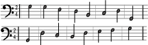

バッハとお散歩
音楽家バッハのページ
さて、こちらに同じ8音が二列に並んでいますが、下のほうの8音をクリックしていただくと反転します。
にゃ！左右反転したのにゃ！

※ご利用のブラウザでは再生することができません。
と、このように、後ろから反対に演奏した音が出てくるのが「14のカノン」の1曲目になります。
お散歩どこからともなくあらわれたあの有名な肖像画
バッハがこちらに差し出すものは 「１４のカノン」のテーマとなる８音
上下が逆さまにもなってる？反行カノンとも呼ばれているらしい 14曲のうちの３曲目の曲